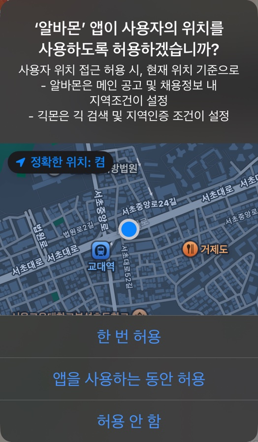

가장 많은 공고와
인재를 만날 수 있어요
나에게 딱 맞는 일을
찾아드릴게요!
지역 설정부터 시작해 볼까요?
나에게 딱 맞는 알바 찾기
어디서
일하고 싶으세요?
'내 주변에서 찾기'를 누르면
에 동의한 것으로 간주합니다.
지역을 선택해 주세요
선택한 곳0/10
최대 10개까지 선택할 수 있어요
지역을 선택해 주세요
지도는 배포 주소(https)에서 보여요
지도를 움직여 원하는 위치를 찾고, 반경을 설정해 보세요.
얼마나 일하고 싶으세요?
어떤 일을 하고 싶으세요?
복수 선택이 가능해요 (최대 5개)

나를 위한 실시간 추천 알바
채용정보
근무조건
모집조건
근무지역
상세요강

위치 동의 플로우